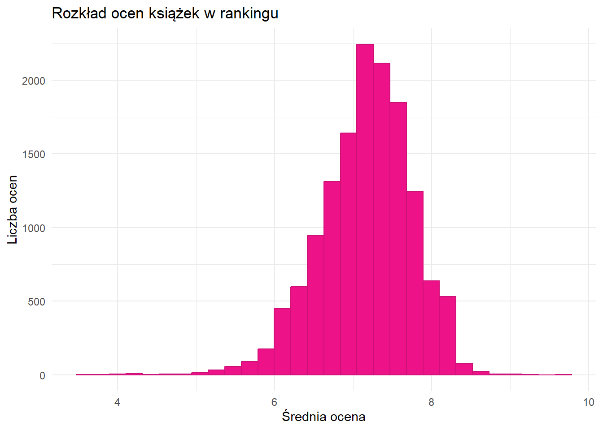

| Tytuł | Autor | Średnia ocena | Liczba ocen | Liczba czytelników | Liczba opinii | Pozycja w rankingu |
|---|---|---|---|---|---|---|
| Harry Potter i Kamień Filozoficzny | J.K. Rowling | 8.2 | 84701 | 126347 | 5137 | 1 |
| Harry Potter i Komnata Tajemnic | J.K. Rowling | 8.1 | 70551 | 105836 | 2291 | 2 |
| Harry Potter i więzień Azkabanu | J.K. Rowling | 8.3 | 67667 | 102262 | 2223 | 3 |
| Harry Potter i Czara Ognia | J.K. Rowling | 8.2 | 64215 | 98009 | 1882 | 4 |
| Harry Potter i Zakon Feniksa | J.K. Rowling | 8.3 | 59895 | 91951 | 1694 | 5 |
| Harry Potter i Książę Półkrwi | J.K. Rowling | 8.3 | 58355 | 89941 | 1560 | 6 |
| Harry Potter i insygnia śmierci | J.K. Rowling | 8.4 | 57860 | 89324 | 2100 | 7 |
| Hobbit, czyli tam i z powrotem | J.R.R. Tolkien | 7.7 | 57037 | 84765 | 3063 | 8 |
| 1984 | George Orwell | 8.4 | 53512 | 91219 | 3462 | 9 |
| Mistrz i Małgorzata | Michaił Bułhakow | 8.4 | 53139 | 92115 | 3363 | 10 |
Analiza wyborów czytelników
Wprowadzenie
W ramach projektu badany jest wpływ cech jakościowych książek na ich popularność w sferze czytelniczej w Polsce, oraz analizowane są wybory i upodobania czytelników w okresie do końca 2024.
Popularność serwisów służących do dzielenia się opiniami i prowadzenia kolekcji właśnie takie jak zawarty w tym projekcie portal lubimczytac.pl czy też inne podobne np. filmweb czy goodreads, pozwala przez analizowanie zawartych w nich danych badać upodobania konsumentów kultury popularnej w łatwiejszy i bardziej regularny sposób niż za pomocą ankiet czy sondaży.
Dane
Dane wykorzystane w projekcie zostały zescrapowane ze portalu lubimyczytac.pl z rankingu książek wg liczby ocen (czyli najbardziej popularnych). Jest to strona pozwalająca użytkownikom na dodawanie przeczytanych lub zaplanowanych książek do wirtualnej biblioteczki oraz dzielenie się opiniami o nich.
W tym procesie użyto pakietu rvest z R oraz wtyczki do Chrome SelectorGadget, która ułatwia odnajdywanie selektorów CSS.
Pierwszy zestaw danych zawiera ponad 14k obserwacji - są to ogólne informacje dotyczące wszystkich książek znajdujących się w ww. rankingu. Te dane zostały zanalizowane pod kątem ogólnych charakterystyk takich jak np. korelacja pomiędzy liczbą czytelników a średnią oceną pozycji. Zestaw zawiera:
tytuł
autora
średnią ocenę
liczbę ocen (liczbę wystawionych ocen w skali 1 do 10)
liczbę czytelników
liczbę opinii (liczbę wystawionych recenzji - komentarzy)
pozycję w rankingu
Drugi zestaw danych zawiera szczegołówe dane dotyczące kilkuset najbardziej popularnych pozycji (czyli te ze szczytu z rankingu z 1go zestawu danych). Ten zestaw został wykorzystany do oceny czynników wpływających na wybory czytelników. W zestawie zawarto dla każdej pozycji:
Tytuł
Autora
Nazwę cyklu(serii, “single” - książka niebędąca częścią żadnego cyklu)
Informację o tym, czy dana pozycja jest częścią jakiegokolwiek cyklu (0 - nie, 1 - tak)
Średnią ocenę
Gatunek
Liczbę czytelników
Liczbę ocen
Liczbę opinii
Liczbę stron
Estymowany czas potrzebny na przeczytanie danej pozycji
Informację o tym, czy dana pozycja jest lekturą (0 - nie, 1 - tak)
Pozycję w rankingu
Opis (zescrapowany z portalu, zazwyczaj pochodzi od wydawcy)
| Autor | Średnia ocena | Liczba ocen | Liczba czytelników | Liczba opinii | Tytuł | Lektura | Gatunek | Czas na przeczytanie | Liczba stron | Nazwa cyklu | Liczba godzin | Liczba minut | Łączny czas | Czy jest cyklem | Pozycja w rankingu |
|---|---|---|---|---|---|---|---|---|---|---|---|---|---|---|---|
| J.K. Rowling | 8.2 | 84701 | 126347 | 5137 | Harry Potter i Kamień Filozoficzny | 0 | literatura młodzieżowa | 5 godz. 20 min. | 320 | Harry Potter | 5 | 20 | 320 | 1 | 1 |
| J.K. Rowling | 8.1 | 70551 | 105836 | 2291 | Harry Potter i Komnata Tajemnic | 0 | literatura młodzieżowa | 5 godz. 56 min. | 356 | Harry Potter | 5 | 56 | 320 | 1 | 2 |
| J.K. Rowling | 8.3 | 67667 | 102262 | 2223 | Harry Potter i więzień Azkabanu | 0 | literatura młodzieżowa | 7 godz. 36 min. | 456 | Harry Potter | 7 | 36 | 440 | 1 | 3 |
| J.K. Rowling | 8.2 | 64215 | 98009 | 1882 | Harry Potter i Czara Ognia | 0 | literatura młodzieżowa | 12 godz. 44 min. | 764 | Harry Potter | 12 | 44 | 740 | 1 | 4 |
| J.K. Rowling | 8.3 | 59895 | 91951 | 1694 | Harry Potter i Zakon Feniksa | 0 | fantasy, science fiction | 15 godz. 59 min. | 959 | Harry Potter | 15 | 59 | 920 | 1 | 5 |
| J.K. Rowling | 8.3 | 58355 | 89941 | 1560 | Harry Potter i Książę Półkrwi | 0 | literatura młodzieżowa | 11 godz. 40 min. | 700 | Harry Potter | 11 | 40 | 680 | 1 | 6 |
| J.K. Rowling | 8.4 | 57860 | 89324 | 2100 | Harry Potter i insygnia śmierci | 0 | literatura młodzieżowa | 13 godz. 0 min. | 780 | Harry Potter | 13 | 0 | 800 | 1 | 7 |
| J.R.R. Tolkien | 7.7 | 57037 | 84765 | 3063 | Hobbit, czyli tam i z powrotem | 1 | fantasy, science fiction | 5 godz. 20 min. | 320 | single | 5 | 20 | 320 | 0 | 8 |
| George Orwell | 8.4 | 53512 | 91219 | 3462 | 1984 | 1 | literatura piękna | 7 godz. 12 min. | 432 | single | 7 | 12 | 440 | 0 | 9 |
| Michaił Bułhakow | 8.4 | 53139 | 92115 | 3363 | Mistrz i Małgorzata | 1 | klasyka | 7 godz. 34 min. | 454 | single | 7 | 34 | 440 | 0 | 10 |
Przygotowanie danych
Dane po pobraniu zostały oczyszczone:
za pomocą pakietu stringr usunięto spacje i inne znaki błędnie pobrane przy scrapowaniu strony
w nielicznych przypadkach braków w kolumnach “czas” oraz “liczba stron” uzupełniono je zerami, aby ich nie usuwać (ze względu na niewielką liczbę danych); zostały wykluczone jedynie we fragmentach analizujących wpływ właśnie tych zmiennych, aby uniknąć ryzyka zniekształcenia wyników przez wartości odstające
usunięto nieliczne pozycje mające 0 ocen lub czytelników - nie wnoszą bowiem nic do badania
Ze względu na fakt iż wszystkie książki na portalu są dodawane ręcznie przez użytkowników zdarzają się powtórzenia (np. różne wydania są wpisywane osobno) lub braki w danych szczegółowych, jednak problemy te nie zaistniały w części danych analizowanych pod kątem jakościowym.
Cel projektu
Celem projektu jest przeanalizowanie zależności pomiędzy przedstawionymi zmiennymi w celu odpowiedzenia na pytania badawcze:
Jakie pozycje są najczęściej wybierane przez czytelników?
- Czy ma na to wpływ to, czy dana pozycja jest lekturą szkolną bądź częścią serii?
- Jacy autorzy są najbardziej popularni?
- Jakie gatunki są najczęściej wybierane?
Jaki wpływ na ocenę danej pozycji mają cechy jakościowe książek?
- To, czy jest lekturą (czyli czy jest czytana “z przymusu”, czy dla przyjemności)
- To, czy jest częścią cyklu (rozpowszechnienie)
- Długość (ilość stron, co bezpośrednio przekłada się na czas potrzebny na daną pozycję)
- To, ile osób ją przeczytało (popularność)
- Gatunek
Hipotezy badawcze
W odpowiedzi na zadane pytania postawiono hipotezy badawcze:
Najczęściej wybierane pozycje to książki znane w kulturze popularnej - np. dobrze znane serie fantasy, bądź lektury szkolne, oraz inne “lekkie” gatunki takie jak np. romans czy kryminał, a także najbardziej cenione klasyki literatury polskiej i zachodniej.
Lektury z pewnością stanowią dużą część rankingu.
Duży udział w rankingu mają również książki będące częścią serii.
Najbardziej popularni są autorzy polscy lub angielskojęzyczni, z dużym dorobkiem literackim, tworzący beletrystykę.
Najczęściej wybierane gatunki to te czytane dla przyjemności i rozrywki - fantastyka, kryminał, romans.
Wpływ na ocenę mają:
Lektury, mimo powszechności, są średnio gorzej oceniane przez wzgląd na to, iż ich przeczytanie w przypadku większości zadeklarowanych czytelników było zapewne obowiązkiem.
Książki będące częścią cyklu są zazwyczaj oceniane lepiej - cały cykl jest czytany tylko przez osoby, którym się spodobał, więc siłą rzeczy oceny bedą pozytywne.
Najlepiej oceniane są książki krótsze bądź średniej długości - mogą być przystępniejsze od bardzo długich
Książki bardzo popularne i ocenione przez tysiące użytkowników mają oceny wyższe - opinie negatywne są nielicznymi skrajnymi przypadkami, ponieważ nie podobająca się komuś lektura zazwczyaj nie jest kontynuowana.
Najlepiej oceniane są gatunki typu fantasy, romans, kryminał - czyli lekkie i czytane dla przyjemności.
Analiza całości rankingu
[1] "Cała baza książek z lubimczytać zawiera 9991 unikatowych pozycji od 3322 różnych autorów."[1] "Najniższa ocena to: 3.5 otrzymało ją 1 pozycji, a dokładniej: Zmrok . "[1] "Najlepszą ocene, tj 9.6 - otrzymała 1 książek, a dokładnie to: Inwestowanie dla każdego ."Tak wygląda kilka pierwszych wygrywających pozycji:
| Tytuł | Autor | Średnia ocena | Liczba ocen | Liczba czytelników | Liczba opinii | Pozycja w rankingu |
|---|---|---|---|---|---|---|
| Harry Potter i Kamień Filozoficzny | J.K. Rowling | 8.2 | 84701 | 126347 | 5137 | 1 |
| Harry Potter i Komnata Tajemnic | J.K. Rowling | 8.1 | 70551 | 105836 | 2291 | 2 |
| Harry Potter i więzień Azkabanu | J.K. Rowling | 8.3 | 67667 | 102262 | 2223 | 3 |
| Harry Potter i Czara Ognia | J.K. Rowling | 8.2 | 64215 | 98009 | 1882 | 4 |
| Harry Potter i Zakon Feniksa | J.K. Rowling | 8.3 | 59895 | 91951 | 1694 | 5 |
| Harry Potter i Książę Półkrwi | J.K. Rowling | 8.3 | 58355 | 89941 | 1560 | 6 |
| Harry Potter i insygnia śmierci | J.K. Rowling | 8.4 | 57860 | 89324 | 2100 | 7 |
| Hobbit, czyli tam i z powrotem | J.R.R. Tolkien | 7.7 | 57037 | 84765 | 3063 | 8 |
| 1984 | George Orwell | 8.4 | 53512 | 91219 | 3462 | 9 |
| Mistrz i Małgorzata | Michaił Bułhakow | 8.4 | 53139 | 92115 | 3363 | 10 |
| Ostatnie życzenie | Andrzej Sapkowski | 8.4 | 52007 | 78622 | 2593 | 11 |
| Cień wiatru | Carlos Ruiz Zafón | 8.1 | 48221 | 86045 | 4604 | 12 |
| Mężczyźni, którzy nienawidzą kobiet | Stieg Larsson | 8.2 | 44465 | 72738 | 3581 | 13 |
| Krew elfów | Andrzej Sapkowski | 8.2 | 44207 | 67316 | 1557 | 14 |
| Igrzyska śmierci. Wydanie ilustrowane | Suzanne Collins, Nico Delort | 8.2 | 44115 | 69503 | 4064 | 15 |
| Zmierzch. Wydanie specjalne | Stephenie Meyer | 6.3 | 44086 | 65026 | 3866 | 16 |
| Zbrodnia i kara | Fiodor Dostojewski | 7.9 | 42778 | 68763 | 2072 | 17 |
| Kod Leonarda da Vinci | Dan Brown | 7.2 | 42085 | 65104 | 2018 | 18 |
| Miecz przeznaczenia | Andrzej Sapkowski | 8.4 | 40973 | 61340 | 1447 | 19 |
| Oskar i pani Róża | Éric-Emmanuel Schmitt | 8.1 | 40713 | 64096 | 3474 | 20 |
Poniższy wykres przedstawia rozkład ocen z całego rankingu - widać wyraźnie, że zdecydowana większość ocen oscyluje wokół 7.5 (w skali 1 do 10). Zapewnie wynika to z faktu, iż niewiele osób nie polubiwszy danej książki, zdecyduje się ją dokończyć i ocenić.

H 2.3. Książki przeczytane przez duża liczbę osób są średnio lepiej oceniane.
Poniższy wykres przedstawia związek pomiędzy średnią oceną a liczbą czytelników/liczbą ocen.
Pomimo widocznego na wykresie lekkiego wzrostu średniej oceny wraz ze wzrostem liczby czytelników, współczynnik korelacji Pearsona jest niewielki- a więc nie ma znaczącej korelacji pomiędzy liczbą ocen/czytelników a wysokością średniej oceny.
[1] "Współczynnik korelacji Pearsona pomiędzy liczbą czytelników a średnia oceną wynosi zaledwie 0.138 . Nie jest to zatem znacząca korelacja."Analiza najwyższych w rankingu pozycji
Analiza różnic między lekturami szkolnymi & cyklami, a resztą pozycji
H 1.1 Lektury z pewnością stanowią dużą część rankingu.
H 1.2 Duży udział w rankingu mają również książki będące częścią serii.
Porównanie udziału i ocen lektur do innych książek:
[1] "Średnia wszystkich ocen: 7.39"[1] "Spośród analizowanych 359 książek, 42 to lektury - poza nimi, jeszcze 317 pozycji. Czyli lektury stanowią 13 procent zbioru. Jednak jesli spojrzymy tylko na 100 pierwszych najpopularniejszych pozycji, to stanowią aż 23.5 procent."[1] "Lektury średnio uzyskują ocenę 6.68 a inne książki - 7.49 ."[1] "Najlepiej oceniania lektura to: ' 1984 ' oceniona na 8.4 a najlepiej oceniona pozycja niebędąca lekturą to ' Droga Królów ' oceniona na 8.8 ."Zatem istotnie lektury mają dość duży udział w rankingu i średnio gorsze oceny. Wynika to zapewne z ich obowiązkowości - są powszechnie czytane, ale zazwyczaj z przymusu, co z pewnością wpływa na odbiór danego dzieła.
Porównanie ocen i udziału książek będących elementami serii:
[1] "Książki będące częściami serii to 58.8 procent; średnio otrzmują ocenę 7.5 podczas gdy książki niebędące częścią serii są średnio oceniane na: 7.2 ."Zatem istotnie książki będące elementem cyklu stanowią znacząca część zbioru danych i mają średnio lepsze oceny. Wynika to zapewne z faktu, że w wiele z najbardziej rozpowszechnionych w kulturze popularnej książek - np. Harry Potter, Wiedźmin czy Gra o tron - są właśnie seriami, tak jak zresztą większość literatury fantastycznej, która stanowi zdecydowaną większość w tym rankingu (co widać na wykresie w dalszej części opracowania). Podział zbioru ze względu na bycie lekturą oraz na bycie częścią serii obrazują poniższe wykresy:
H 4.1. Lektury, mimo powszechności, są średnio gorzej oceniane przez wzgląd na to, iż ich przeczytanie w przypadku większości zadeklarowanych czytelników było zapewne obowiązkiem.
4.2. Książki będące częścią cyklu są zazwyczaj oceniane lepiej - cały cykl jest czytany tylko przez osoby, którym się spodobał, więc siłą rzeczy oceny bedą pozytywne.
Poniższe wykresy przedstawiają rozkład ocen w zależności:
1) od tego, czy dana pozycja jest częścią cyklu
2) od tego, czy dana pozycja jest lekturą
Na przedstawionych wykresach widać, że:
1) książki będące częścią cyklu uzyskują nieco częściej nieco wyższe oceny niż książki stand-alone
2) książki niebędące lekturami wyraźnie otrzymują o wiele częściej pozytywne oceny, niż lektury.
Długość książki a ocena
[1] "Korelacja między średnią oceną a długością książki wynosi 0.358 . Jest to zatem umiarkowana korelacja."H 2.3. Najlepiej oceniane są książki krótsze bądź średniej długości - mogą być przystępniejsze od bardzo długich
Poniższe wykres obrazuje korelację pomiędzy średnią oceną książki a jej długością (liczba stron):
Współczynnik korelacji Pearsona miał tu wartość nieco powyżej 0.3 z czego można wnioskować o umiarkowanym wpływie długości książki na ocenę. Poniższy wykres przedstawia tę zależność z podziałem książek na kategorie wg liczby stron (książki krótkie, średnie, długie i bardzo długie)

O dziwo, pozycje znacząco dłuższe są średnio ocenianie lepiej. Prawdopodobnie ma na to wpływ dominujący wśród nich gatunek:

Który jest zazwyczaj lepiej oceniany (opisane w dalszej części projektu).
Autorzy
H 2.Najbardziej popularni są autorzy polscy lub angielskojęzyczni, z dużym dorobkiem literackim, tworzący beletrystykę.
Grupuję dane wg autorów - zliczam, ile razy wystąpili w rankingu, jaka jest średnia ocena wszystkich ich książek, jakie gatunki, ile łącznie mają czytelników, ile stron łącznie napisali i ile czasu trzeby by, by je wszystkie przeczytać.
Poniższa tabela przedstawia najbardziej popularnych (pod względem liczby ich książek, które znalazły się w rankingu):
| Autor | Liczba książek | Liczba lektur | Średnia ocena | Gatunki |
|---|---|---|---|---|
| Remigiusz Mróz | 14 | 0 | 7.3 | kryminał, sensacja, thriller, literatura obyczajowa, romans, fantasy, science fiction, romantasy |
| Stephen King | 12 | 0 | 7.5 | kryminał, sensacja, thriller, horror, fantasy, science fiction |
| Andrzej Sapkowski | 11 | 0 | 8.1 | fantasy, science fiction |
| Camilla Läckberg | 9 | 0 | 7.4 | kryminał, sensacja, thriller |
| J.K. Rowling | 9 | 0 | 8.0 | literatura młodzieżowa, fantasy, science fiction, literatura piękna |
| Cassandra Clare | 8 | 0 | 8.0 | fantasy, science fiction, kryminał, sensacja, thriller |
| George R.R. Martin | 8 | 0 | 8.2 | fantasy, science fiction |
| Dan Brown | 6 | 0 | 7.0 | kryminał, sensacja, thriller, literatura piękna |
| Henryk Sienkiewicz | 6 | 4 | 6.5 | literatura młodzieżowa, klasyka, powieść historyczna |
| J.R.R. Tolkien | 6 | 1 | 8.3 | fantasy, science fiction |
| Jo Nesbø | 6 | 0 | 7.3 | kryminał, sensacja, thriller, kryminał, sensacja, thriller |
| Stephenie Meyer | 6 | 0 | 6.4 | romantasy, fantasy, science fiction, kryminał, sensacja, thriller |
Poniższy wykres obrazuje ilość książek przypadający na najbardziej popularnych autorów, wraz z dominującymi w ich twórczości gatunkami:
##Najlepiej oceniani autorzy (z łączną oceną ich twórczości powyżej średniej):
| Autor | Średnia ocena autora | Liczba książek | Liczba lektur | Tytuły | Gatunki |
|---|---|---|---|---|---|
| Brandon Sanderson | 8.8 | 1 | 0 | Droga Królów | fantasy, science fiction |
| Mario Puzo | 8.7 | 1 | 0 | Ojciec chrzestny | kryminał, sensacja, thriller |
| Aleksander Dumas | 8.6 | 1 | 0 | Hrabia Monte Christo | klasyka |
| Margaret Mitchell | 8.5 | 1 | 0 | Przeminęło z wiatrem | klasyka |
| Markus Zusak | 8.4 | 1 | 0 | Złodziejka książek | literatura piękna |
| Michaił Bułhakow | 8.4 | 1 | 1 | Mistrz i Małgorzata | klasyka |
| J.R.R. Tolkien | 8.3 | 6 | 1 | Hobbit, czyli tam i z powrotem, Drużyna Pierścienia, Dwie wieże, Powrót Króla, Władca Pierścieni, Silmarillion. Edycja specjalna z ilustracjami autora | fantasy, science fiction |
| Khaled Hosseini | 8.3 | 1 | 0 | Chłopiec z latawcem | literatura piękna |
| Kristin Hannah | 8.3 | 1 | 0 | Słowik | powieść historyczna |
| George R.R. Martin | 8.2 | 8 | 0 | Gra o tron, Starcie królów, Nawałnica mieczy. Stal i śnieg, Nawałnica mieczy. Krew i złoto, Uczta dla wron. Cienie śmierci, Uczta dla wron: Sieć spisków, Taniec ze smokami. Część 1, Taniec ze smokami. Część 2 | fantasy, science fiction |
#Najbardziej popularni autorzy (ze względu na liczbę czytelników):
| Autor | Liczba książek | Łączna liczba czytelników |
|---|---|---|
| Remigiusz Mróz | 14 | 305704 |
| Stephen King | 12 | 315257 |
| Andrzej Sapkowski | 11 | 528223 |
| Camilla Läckberg | 9 | 229735 |
| J.K. Rowling | 9 | 744766 |
| Cassandra Clare | 8 | 235435 |
| George R.R. Martin | 8 | 311836 |
| Dan Brown | 6 | 219825 |
| Henryk Sienkiewicz | 6 | 179453 |
| J.R.R. Tolkien | 6 | 290296 |
Gatunki
H 3.Najczęścięj wybierane gatunki to te czytane dla przyjemności i rozrywki - fantastyka, kryminał, romans.
Poniższe tabelki przedstawiają ilośc książek każdego gatunku w zestawieniu, odpowiednio
- łącznie z lekturami
| Gatunek | Liczba pozycji |
|---|---|
| fantasy, science fiction | 91 |
| kryminał, sensacja, thriller | 69 |
| literatura piękna | 54 |
| literatura młodzieżowa | 37 |
| klasyka | 25 |
| literatura obyczajowa, romans | 19 |
| utwór dramatyczny | 12 |
| horror | 8 |
| literatura dziecięca | 8 |
| romantasy | 8 |
| biografia, autobiografia, pamiętnik | 6 |
| powieść historyczna | 5 |
| reportaż | 4 |
| fantasy, science fiction | 3 |
| literatura podróżnicza | 2 |
| popularnonaukowa | 2 |
| kryminał, sensacja, thriller | 2 |
| opowiadania, powieści dla dzieci | 1 |
| powieść przygodowa | 1 |
| publicystyka literacka, eseje | 1 |
| reportaż | 1 |
Wyłączając lektury:
Gatunek Liczba pozycji fantasy, science fiction 89 kryminał, sensacja, thriller 69 literatura piękna 48 literatura młodzieżowa 35 literatura obyczajowa, romans 19 klasyka 12 horror 8 romantasy 8 literatura dziecięca 6 biografia, autobiografia, pamiętnik 4 powieść historyczna 4 reportaż 3 fantasy, science fiction 3 literatura podróżnicza 2 utwór dramatyczny 2 kryminał, sensacja, thriller 2 popularnonaukowa 1 powieść przygodowa 1 reportaż 1
Poniższe wykresy obrazują liczebności w danych gatunkach, odpowiednio razem z lekturami i bez lektur.
Wielkość segmentu zależy od tego, ile książek danego gatunku znalazło się w rankingu.
Biorąc pod uwagę lektury:
Wyłączając ze zbioru lektury:
Widać wyraźnie dominację kryminały, fantastyki, literatury pięknej i młodzieżowej. Przy wyłączeniu ze zbioru lektur, stosunek większości gatunków pozostaje taki sam poza niewidocznym już udziałem utworu dramatycznego.
H 4.4. Najlepiej oceniane są gatunki typu fantasy, romans, kryminał - czyli lekkie i czytane dla przyjemności.
Poniższy wykres przedstawia rozkład ocen z podziałem na gatunek. Zostały tu przedstawione tylko gatunki o odpowiednio dużej liczbie pozycji (np. reportaży jest tylko parę, więc trudno tu mówić o rozkładzie ocen).
Wyraźnie widać, że w fantastyce i kryminałach dominują pozytywne oceny, podczas gdy np. klasyka czy literatura pięna jest oceniana dość różnie.
Poniższy wykres obrazuje również rozkład ocen ze względu na gatunek, ale liczba kropek odpowiadająca liczbie pozycji danego gatunku przystępniej niż histogram pomaga zwizualizow liczebność każdego z gatunków.
Infografiki
Opisy książek
Poniższy wykres przedstawia najczęściej pojawiąjące się w opisach słowa:
Graf wizualizujący podobieństwa
Na przedstawionym poniżej grafie figuruje, ze względu na czytelność, tylko około 200 pozycji (wybrano te z największą liczbą ocen). Graf przedstawia książki podobne do siebie ze względu na poziom indeksu prawdpodobieństwa, zależnego od:
tego, czy są tego samego gatunku (warunek konieczny)
czy mają tego samego autora
czy są w tym samym cykly (serii)
Widoczne zgrupowania to klastry najbardziej podobnych so siebie pozycji; największe znaczenie miał tu gatunek.
Podsumowanie
W wyniku analizy pozyskanych danych zauważono, że:
na popularność książek największy wpływ ma przynależenie do kategorii literatury rozrywkowej i fikcyjnej
na ocenę największy wpływ ma to, czy książka jest lekturą - jest wtedy oceniana gorzej
na rozpowszechnienie największy wpływ ma to, czy dana książka jest częścią cyklu - te stanowiły znaczącą większość zbioru.
Warto zauważyć, że przedstawione dane nie prezentują przekroju społeczeństwa, tylko dość niewielką grupę osób. Można śmiało przypuszczać, że ze strony służącej do prowadzenia czytelniczej historii i oceniania ulubionych dzieł korzystają tylko pasjonaci literatury, którzy czytają o wiele więcej niż przeciętna osoba (wg raportu BN w 2023 tylko 43% respondentów przeczytało w ciągu roku choć jedną książkę), i sięgają po bardziej zróżnicowane pozycje, niż osoba nie czytająca regularnie, która mogła mieć styczność tylko i wyłącznie z kanonem lektur i podręcznikami akademickimi. Do tego grona należą też z pewnością tylko osoby regularnie i swobodnie korzystające z internetu - co wyklucza np. większość seniorów i z pewnością wpływa na popularność poszczególnych gatunków (np. bardzo duży udział fantastyki i science fiction, a dość mały poza lekturami klasyków).